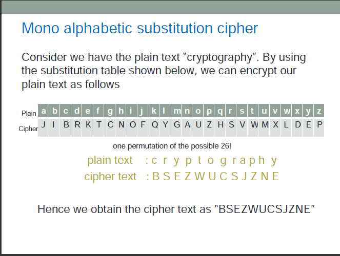

Breaking the Mono-alphabetic Substitution Cipher
Introduction
We are able to break the shift cipher because of it's small key space.
In general, we learnt that the large key space is necesary for secrecy.
However, we will now see that large key space is not always sufficient either.
In this experiment, we work with another well-known historical encryption scheme, namely the mono-alphabetic substitution cipher, that has a very large key space. However, it is quite easily broken using "Frequency analysis" methods. Your task is to break this cipher. Specifically, given (only) the ciphertext in some instance of a mono alphabetic substitution cipher, you need to find the plaintext and the secret key.
Theory
Consider we have the plain text "cryptography".
By using the substitution table below, we can encrypt our plain text as follows:
| a | b | c | d | e | f | g | h | i | j | k | l | m | n | o | p | q | r | s | t | u | v | w | x | y | z |
| J | I | B | R | K | T | C | N | O | F | Q | Y | G | A | U | Z | H | S | V | W | M | X | L | D | E | P |
plain text: c r y p t o g r a p h y
cipher text: B S E Z W U C S J Z N E
Hence we obtain the cipher text as "BSEZWUCSJZNE".
Note
that the frequency of occurrence of characters in the plaintext is
"preserved" in the ciphertext. For instance, the most frequent
character in the ciphertext is likely to be the encryption of the
plaintext character "e" which is the most frequently occurring
charecter in English. For a very brief theory of the
mono-alphabetic substitution cipher and its cryptanalysis, click here

Objective
To understand that just having a large keyspace is not enough to achieve secure encryption.
Manual
STEP 1: For the given ciphertext in the PART I of the experiment page, the first step is to generate ciphertext by clicking on the "Next CipherText" button.
STEP 2:Calculate frequencies of generated ciphertext by clicking on "Calculate Frequencies in Ciphertext" button
STEP 3:Copy the generated ciphertext from PART I and paste in "Scratchpad" area of PART II
STEP 4:Analyse similarties between "Calculated Frequencies Table" and "English Alphabet Frequencies Table"
STEP 5:Based on similarities,try to make a frequency based estimation for each character of ciphertext
STEP 6:Replace characters of CipherText in Scratchpad with a character estimated previously using a Modify function of PART II
STEP 7:Based on Hints from Ciphertext in "Scratchpad" area make more replacement of ciphertext characters
STEP 8:Repeat Step 7 till you get a meaningful English Text
STEP 9: Finally, observe the deciphered plaintext in Scratchpad Area,if a meaningful English text is formed cut-and-paste it in the text-field named "Solution Plaintext" of PART III. Also enter the final character mapping in the"Solution Key" in PART III and click on "Check Answer" button.
STEP 10[OPTIONAL]: Verify that your answer is correct, by encrypting the solution plaintext with your key in PART IV.
Procedure
For Procedure of the experiment refer Theory and Manual.